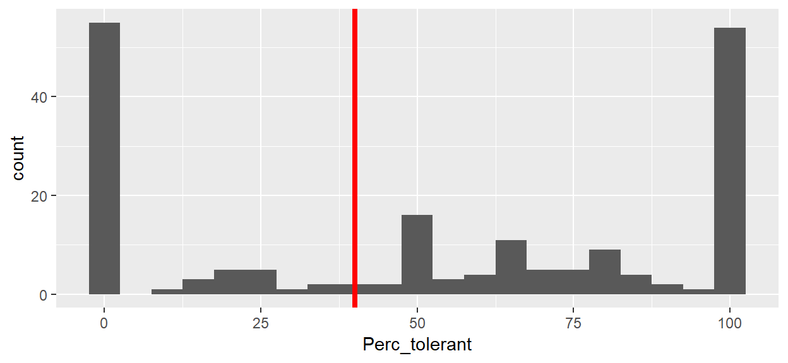
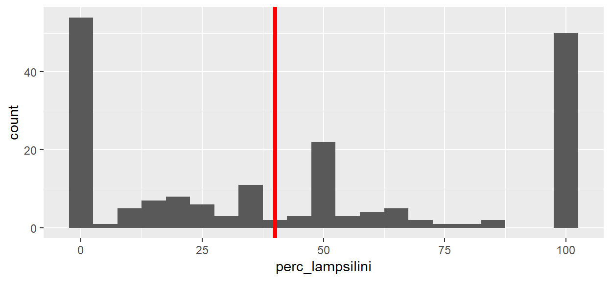
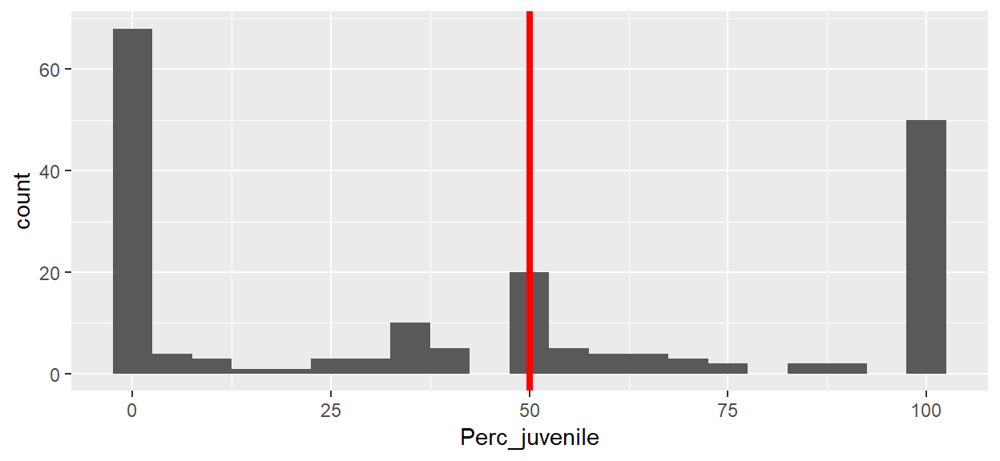
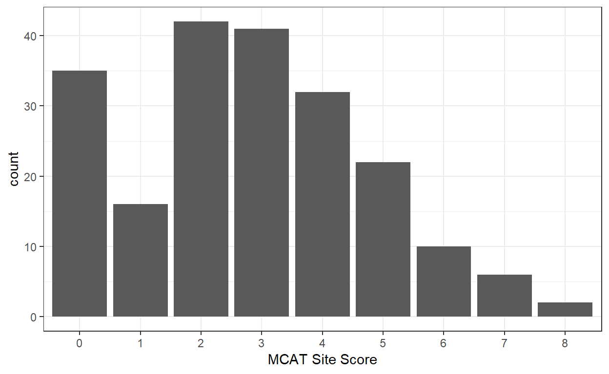
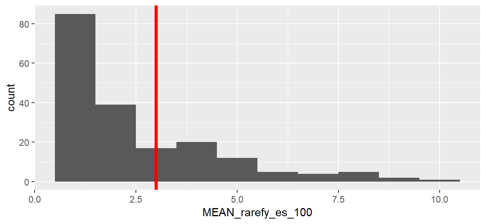

Chapter 6 Calculate Mussel Metrics
6.1 Prepare Mussel Sample Metrics
The purpose of this section is to calculate various metrics of habitat quality for each sampled site. Each of these metrics will be used as presence data as input to create a set of Maxent habitat suitability models. The metrics calculated in this section were taken from the Upper Mississippi River Mussel Community Assessment Tool (MCAT) (Dunn, Zigler, and Newton 2016).
6.2 MCAT Metrics
The following MCAT metrics were selected for inclusion in the model:
percent listed species: percent of listed threatened or endangered species (federal or bordering states) is a measure of sensitive speciespercent tolerant: percent of tolerant species (Amblema plicata, Quadrula quadrula, and Obliquaria reflexa) is a measure of a highly disturbed mussel assemblage; i.e., dominated by species tolerant of unstable substrates, silt accumulation, low current velocities, and fluctuating flow conditions.percent tribe Lampsilini: percent of assemblage that falls within tribe Lampsilini is a measure of species composition, life history, and behavioral characteristicspercent juveniles: percent of mussels <= 5 years-old is a measure of recruitment into an assemblage over the past five yearspercent >= 15 yrs: percent of mussels >= 15 years-old is a measure of age distribution in an assemblageabundance: a measure of abundance at the 75th quartile calculated as the density (no./m^2)species evenness: species evenness represents the dominance of an assemblage by a few species using Pielou’s evenness index (range 0 to 1)tribe evenness: tribe evenness represents the dominance of a particular taxonomic group using Pielou’s evenness index (range 0 to 1)ES_100: the expected number of species with a sample size of 100 estimated by rarefaction is a measure of a healthy mussel assemblage
6.3 Create the Individuals table
The purpose of this step is to assemble the “individual” data for each of the surveys within the study area that will be used in the study.
- Working geodatabase:
//mvrdfs/EGIS/Work/EMP/HREP_Projects/SteamboatSlough/Mussels/SteamboatMusselModel/Data/SB_Mussels.gdb/SB_ILStatePlaneW - Create a feature class respresenting all individual mussel samples in the study area, using a definition query to include only live individuals (
NUMBER_LIV > 0) and name itCordova_all_individuals. Note: theabundancemetric will be based on live mussel counts for each quadrat. - Add the following fields (Type=long integer) to the attribute table:
Listed,Tolerant,Lampsilini,Juveniles,Over_15yrs,tribe
6.4 Create Percent Listed
The purpose of this step is to calculate the percent listed MCAT metric for each sampled site.
- Dissolve the
Cordova_all_individualsfeature class bySAMPLE_IDandENAME(Scientific name). Add ‘SUM_NumberLive’ and ‘SUM_Listed’ fields in the Statistics section of the tool. Uncheck create multipart features. Set Output Feature Class to the working .gdb and name itPercentListed. - Open the
PercentListedattribute table. Add a field titled ‘Perc_listed’ Type=double and enter the expression([SUM_Listed] / [SUM_NumberLive]) * 100into the field calculator to calculate % of individual listed species per quadrat sample. - Add 3 fields titled ‘species’ Type=string and Length=20; ‘longitude’ Type=double; and ‘latitude’ Type=double; in that order.
- Use field calculator to populate the field with species=“perc_listed”. Use Calculate Geometry to populate the ‘longitude’ and ‘latitude’ fields, ensuring that the coordinate system is set to ‘NAD 1983 2011 US Feet’ and ‘StatePlane Illinois West FIPS 1202’ and the units are set to US feet.
- Use the Symbology tab to select a suitability threshold based on quartiles (e.g., only selecting “fair” or “good” locations with >=50% listed species). In the Symbology tab, Show: Quantities; field value ‘perc_listed’; classes=5; and method=quantile.
- Once a threshold is selected, create a definition query where
Perc_listed > 3. This will result in a lower quantity of sample records. - Export selected to .csv for Maxent model run.
6.5 Create Percent Tolerant
The purpose of this step is to calculate the percent tolerant MCAT metric for each sampled site.
- Dissolve this feature class by
SAMPLE_IDandENAME(Scientific name). Add ‘SUM_NumberLive’ and ‘SUM_Tolerant’ fields in the Statistics section of the tool. Uncheck create multipart features. Set Output Feature Class to the working .gdb and name itPercentTolerant. - Open the
PercentTolerantattribute table. Add a field titled ‘Perc_tolerant’ Type=double and enter the expression([SUM_Tolerant] / [SUM_NumberLive]) * 100into the field calculator to calculate % of individual tolerant species per quadrat sample. - Add 3 fields titled ‘species’ Type=string and Length=20; ‘longitude’ Type=double; and ‘latitude’ Type=double; in that order.
- Use field calculator to populate the field with species=“perc_tolerant”. Use Calculate Geometry to populate the ‘longitude’ and ‘latitude’ fields, ensuring that the coordinate system is set to ‘NAD 1983 2011 US Feet’ and ‘StatePlane Illinois West FIPS 1202’ and the units are set to US feet.
- Use the Symbology tab to select a suitability threshold based on quartiles (e.g., only selecting “fair” or “good” locations with >=50% listed species). In the Symbology tab, Show: Quantities; field value ‘perc_listed’; classes=5; and method=quantile.
- Once a threshold is selected, create a definition query where
Perc_tolerant < 40. This will result in a lower quantity of sample records. - Export selected to .csv for Maxent model run.
6.6 Create Percent Tribe Lampsilini
The purpose of this step is to calculate the percent tribe Lampsilini MCAT metric for each sampled site.
6.7 Create Percent Juveniles
The purpose of this step is to calculate the percent juveniles MCAT metric for each sampled site.
6.8 Create Percent Over 15 Years
The purpose of this step is to calculate the percent over 15 years old MCAT metric for each sampled site.
6.9 Create Abundance
The purpose of this step is to calculate the Abundance MCAT metric for each sampled site.
- For the abundance metric, dissolve
Cordova_all_individualsbySAMPLE_IDandENAME(Scientific name). Add ‘SUM_NumberLive’ field in the Statistics section of the tool. Uncheck create multipart features. Set Output Feature Class to the working .gdb and name itAbundance.
# Import Abundance from geodatabase
abundance_sp <- arc2sp("//mvrdfs/EGIS/Work/EMP/HREP_Projects/SteamboatSlough/Mussels/SteamboatMusselModel/Data/SB_Mussels.gdb/SB_ILStatePlaneW/Abundance")
# Convert sp object to a data frame
abundance <- abundance_sp@data
# Remove OBJECTID field
abundance <- abundance[,-1]# Convert from num. of mussels per 0.25 sq m to num. per 1.0 square m
abundance$num_sq_m <- abundance$SUM_NumberLive * 4
# Calculate the quantiles
q <- quantile(abundance$num_sq_m)
q## 0% 25% 50% 75% 100%
## 4 4 8 20 180# Merge the abundance scores back onto the sp object
sample_abundance <- sp::merge(x = abundance_sp,
y = abundance,
by.x = "SampleID", by.y = "SampleID")# Export to geodatabase
sp2arc(sample_abundance, fc_path = "//mvrdfs/EGIS/Work/EMP/HREP_Projects/SteamboatSlough/Mussels/SteamboatMusselModel/Data/SB_Mussels.gdb/SB_ILStatePlaneW/sample_abundance")6.10 Create Species Evenness
The purpose of this step is to calculate the Pielou’s evenness index (range 0-1), estimated at the species level for each sampled site.
- Create a table of SampleID by species by abundance (number live). Use the
Dissolvetool:- Input Features:
Cordova_all_individuals - Output feature class:
Cordova_sampleid_species - Dissolve Fields:
SampleID,EName - Statistics Fields:
NumberLive, SUM - Create Multipart: unchecked
- Input Features:
Ensure that the Cordova_sampleid_species feature class is of type Point Features and not Multipoint Features. If multipoint, then use the Multipart to Singlepart tool to convert from multipoint to point feature type.
# Import ArcGIS feature class into R
cordova_sampleid_species <- arc2sp("//mvrdfs/EGIS/Work/EMP/HREP_Projects/SteamboatSlough/Mussels/SteamboatMusselModel/Data/SB_Mussels.gdb/SB_ILStatePlaneW/Cordova_sampleid_species")
# Convert sp object to a data frame
sample_species <- cordova_sampleid_species@data
# Remove OBJECTID field
sample_species <- sample_species[,-1]
# Convert to vegan community data matrix-like format using labdsv::matrify
sample_species_matrix <- labdsv::matrify(sample_species)# Calculate the Shannon-Weaver diversity index
shannon_diversity <- vegan::diversity(sample_species_matrix, index = "shannon")
# Calculate the number species per site (see ?vegan::diversity)
species_number <- vegan::specnumber(sample_species_matrix)
# Use the following equation to calculate Pielou's evenness
# See the vegan Diversity Vignette for details
pielou_evenness <- shannon_diversity/log(species_number)
# Set NaN pielou_evenness values to zero
pielou_evenness <- ifelse(is.nan(pielou_evenness), 0, pielou_evenness)
# Create a data frame of results
pielou <- data.frame(sampleid = names(pielou_evenness),
shannon_diversity,
species_number,
pielou_evenness)# Merge the Pielou scores back onto the sp object
sample_species_pielou <- sp::merge(x = cordova_sampleid_species,
y = pielou,
by.x = "SampleID", by.y = "sampleid")# Export to geodatabase
sp2arc(sample_species_pielou, fc_path = "//mvrdfs/EGIS/Work/EMP/HREP_Projects/SteamboatSlough/Mussels/SteamboatMusselModel/Data/SB_Mussels.gdb/SB_ILStatePlaneW/sample_species_pielou")- Create a table of SampleID by species Pielou evenness score. Use the
Dissolvetool:- Input Features:
sample_species_pielou - Output feature class:
species_pielou - Dissolve Fields:
SampleID - Statistics Fields:
shannon_diversity, MEANspecies_number, MEANpielou_evenness, MEAN - Create Multipart: unchecked
- Input Features:
- Add “SWD” fields.
6.11 Create Tribe Eveness
The purpose of this step is to calculate the Pielou’s evenness index (range 0-1), estimated at the tribe level. (will probably need to add a new column for tribe; dissolve on this with sample ID)
- In the feature class
Cordova_all_individuals, create a new text variable namedtribe. - Use the
Field Calculatortool on thetribefield to calculate its value using the following Python expression:!Ename!.split()[0] - Create a table of SampleID by tribe by abundance (number live). Use the
Dissolvetool:- Input Features:
Cordova_all_individuals - Output feature class:
Cordova_sampleid_tribe - Dissolve Fields:
SampleID,tribe - Statistics Fields:
NumberLive, SUM - Create Multipart: unchecked
- Input Features:
# Import ArcGIS feature class into R
cordova_sampleid_tribe <- arc2sp("//mvrdfs/EGIS/Work/EMP/HREP_Projects/SteamboatSlough/Mussels/SteamboatMusselModel/Data/SB_Mussels.gdb/SB_ILStatePlaneW/Cordova_sampleid_tribe")
# Convert sp object to a data frame
sample_tribe <- cordova_sampleid_tribe@data
# Remove OBJECTID field
sample_tribe <- sample_tribe[,-1]
# Convert to vegan community data matrix-like format using labdsv::matrify
sample_tribe_matrix <- labdsv::matrify(sample_tribe)# Calculate the Shannon-Weaver diversity index
tribe_shannon_diversity <- vegan::diversity(sample_tribe_matrix, index = "shannon")
# Calculate the number species per site (see ?vegan::diversity)
tribe_number <- vegan::specnumber(sample_tribe_matrix)
# Use the following equation to calculate Pielou's evenness
# See the vegan Diversity Vignette for details
tribe_pielou_evenness <- tribe_shannon_diversity/log(tribe_number)
# Set NaN pielou_evenness values to zero
tribe_pielou_evenness <- ifelse(is.nan(tribe_pielou_evenness), 0,
tribe_pielou_evenness)
# Create a data frame of results
tribe_pielou <- data.frame(sampleid = names(tribe_pielou_evenness),
tribe_shannon_diversity,
tribe_number,
tribe_pielou_evenness)# Merge the Pielou scores back onto the sp object
sample_tribe_pielou <- sp::merge(x = cordova_sampleid_tribe,
y = tribe_pielou,
by.x = "SampleID", by.y = "sampleid")# Export to geodatabase
sp2arc(sample_tribe_pielou, fc_path = "//mvrdfs/EGIS/Work/EMP/HREP_Projects/SteamboatSlough/Mussels/SteamboatMusselModel/Data/SB_Mussels.gdb/SB_ILStatePlaneW/sample_tribe_pielou")- Create a table of SampleID by tribe Pielou evenness score. Use the
Dissolvetool:- Input Features:
sample_tribe_pielou - Output feature class:
tribe_pielou - Dissolve Fields:
SampleID - Statistics Fields:
tribe_shannon_diversity, MEANtribe_number, MEANtribe_pielou_evenness, MEAN - Create Multipart: unchecked
- Input Features:
- Add “SWD” fields.
6.12 Create ES 100
The purpose of this step is to calculate the ES 100 MCAT metric for each sampled site. ES_100 is the expected number of species with a sample size of 100 estimated by rarefaction based on random resampling of the data (Dunn, Zigler, and Newton 2016).
ES_100-species richness estimated by rarefaction; caveat: sites need to be compared based on an equal sample size because # of species and # of individuals sampled are large correlated. Not sure how best to approach this one; I defer to you!
# Uses the sample_species_matrix calculated from the species evenness section
# Calculate rarefaction using a sample size of 100
rarefy_es_100 <- vegan::rarefy(x = sample_species_matrix,
sample = 100)## Warning in vegan::rarefy(x = sample_species_matrix, sample = 100):
## requested 'sample' was larger than smallest site maximum (0)# Calculate rarefaction using a reasonable sample size
rarefy_rowmedian <- vegan::rarefy(x = sample_species_matrix,
sample = median(rowSums(sample_species_matrix)))## Warning in vegan::rarefy(x = sample_species_matrix, sample =
## median(rowSums(sample_species_matrix))): requested 'sample' was larger than
## smallest site maximum (0)# Create a data frame of results
rarefy_species <- data.frame(sampleid = names(rarefy_es_100),
rarefy_es_100,
rarefy_rowmedian,
shannon = diversity(sample_species_matrix),
specnumber = specnumber(sample_species_matrix))# Merge the rarefaction scores back onto the sp object
rarefy_sampleid_species <- sp::merge(x = cordova_sampleid_species,
y = rarefy_species,
by.x = "SampleID", by.y = "sampleid")# Export to geodatabase
sp2arc(rarefy_sampleid_species, fc_path = "//mvrdfs/EGIS/Work/EMP/HREP_Projects/SteamboatSlough/Mussels/SteamboatMusselModel/Data/SB_Mussels.gdb/SB_ILStatePlaneW/rarefy_sampleid_species")- Create a table of SampleID by tribe Pielou evenness score. Use the
Dissolvetool:- Input Features:
rarefy_sampleid_species - Output feature class:
rarefy_samples - Dissolve Fields:
SampleID - Statistics Fields:
SUM_NumberLive, MEANrarefy_es_100, MEANrarefy_rowmedian, MEANshannon, MEANspecnumber, MEAN - Create Multipart: unchecked
- Input Features:
- Add “SWD” fields.
6.13 Determine MCAT Metric per site threshold
The purpose of this section is to display the range of calculated values for each of the MCAT metrics for each of the sites in the Steamboat Island study area. The MCAT report is clear about metric thresholds to use for evaluating quality mussel beds. However, this study is using the individual site unit of analysis. Therefore, decisions must be made on what is the appropriate metric threshold to use for the site level of analysis. The descriptive statistics in this section will help to inform that decsion.
6.13.1 Percent Listed

6.13.2 Percent Tolerant

6.13.3 Percent Tribe Lampsilini

6.13.4 Percent Juveniles

6.13.5 Percent over 15 years

6.13.6 Abundance
6.13.7 Species Evenness
6.13.8 Tribe Evenness

6.13.9 ES_100

6.14 Choice of Site Level MCAT Metric Thresholds
The discriptive statistics presented in the previous section were used to select MCAT metrics thresolds.
| Metrics | Poor | Fair | Good | Site Threshold | No. of Sites |
|---|---|---|---|---|---|
| % listed | <0.6 | 0.6-3.6 | >3.6 | >3 | 34 |
| % tolerant | >62.7 | 38.3-62.7 | <38.3 | <40 | 72 |
| % lampsilini | <17.2 or >56.4 | <17.2-34.7 or >39.5-56.4 | >34.7-39.5 | >40 | 93 |
| % juveniles | <19.8 | <19.8-49.3 | >49.3 | >50 | 72 |
| % >= 15 years | <0.8 or >16.0 | >5.6-16.0 | >2.4-5.6 | >5 | 13 |
| abundance | <8 | 8-13 | >13 | >13 | 62 |
| species evenness | <0.665 | 0.665-0.780 | >0.780 | >0.7 | 98 |
| tribe evenness | <0.719 | 0.719-0.823 | >0.823 | >0.8 | 86 |
| ES 100 | <11.5 | 11.5-15.7 | >15.7 | >3* | 49 |
| * The site threshold for this metric is lower than the bed threshold due to the lower number of individuals of each species found at each sampled site. |
6.15 Export to Maxent “SWD” format
The purpose of this step is to assign the ADH predictor variables (and optionally the wind/wave variables) to each MCAT metric. The Maxent documentation refers to this format as the “Samples With Data” (SWD) format because it contains the samples (i.e., sample identifier, latitude, longitude) with the environmental predictor variables (e.g., q5_velocity, q5_depth, q5_slope, etc.).
Use Extract Multi Values to Points (spatial analyst) tool to write new values (velocity, depth, slope, and ss) onto each MCAT metric feature class and
background.- Input point features:
\\mvrdfs\EGIS\Work\EMP\HREP_Projects\SteamboatSlough\Mussels\SteamboatMusselModel\Data\SB_Mussels.gdb\SB_ILStatePlaneW\PercentListed - Input rasters: velocity, depth, slope, and ss (use rasters in the
Adh.gdb, not .bil) copy unionidae_swd and delete 3 variable fields. Ensure all layers have same spatial reference before running the tool. Copy .gdb on local drive prior to running Maxent. - Repeat this process for
PercentTolerant,PercentLampsilini,PercentJuvenile,PercentOver15yrs,Abundance,species_pielou,tribe_pielou,rarefy_samples, andbackground.
- Input point features:
- Ensure all layers have same spatial reference before running the tool.
Export
backgroundand each mussel MCAT metric as .csv files. Ensure ObjectID field is deleted in Excel prior to upload in Maxent.
References
Dunn, Heidi, Steve Zigler, and Teresa Newton. 2016. “Validation of a Mussel Community Assessment Tool for the Upper Mississippi River System.” 2014 MCA2. Rock Island, IL: U.S. Army Corps of Engineers, Rock Island District.